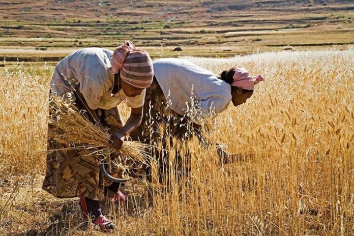

The area/country of my choice is Eritrea, this is the neighbouring country where my parents are from (Ethiopia). If Ethiopia wasn’t taken that would be my immediate choice but Eritrea is also close enough. Eritrea is located in then Horn Of Africa, which is the North Eastern part of Africa. With the nation being in a devestating war for three decades, poverty has become a huge problem. One of the many health conerns in this country is the quality of water the population is living on. This water is what this article/website will be diving into about!
The cause of most of the poor drinking water is the pollution of the water, this pollution starts from the amount of rainfall the nation receives being around 15 inches annual. The water then goes into the sewage drains and systems, the water from the rainfall carries bacteria from human excrements. Then the filtering systems don’t really do a good job of completely cleaning the water, leading to these bacteria being very present in the water they drink. These bacteria cause illnesses like diarrhea and cholera.
The water is also contaminated with a lot of nitrates, from the streets in Asmara (Capital City of Eritrea). “Consuming too much nitrate can be harmful—especially for babies.”(health.state.mn.us). The health effects tied to large consumption are “The following conditions may also put people at higher risk of developing nitrate-induced methemoglobinemia: anemia, cardiovascular disease, lung disease, sepsis, glucose-6-phosphate-dehydrogenase deficiency, and other metabolic problems.”(health.state.mn.us).
This standard is in terms of salt which is the only resource I can find in regards to water quality in Eritrea.
The organization that has come up with these standards is the World Health Organization; this is the head organization that deals with health crises all over the world.
The level of contaminants in the water is measured by TDS (Total Dissolved Salts), TDS is recorded in parts per million. This article states that “The water which comes down to Massawa from the highlands has 1,300 TDS – that’s Total Dissolved Salts – where the WHO (World Health Organisation) standard says that 500 TDS should be the maximum and in extreme cases could be up to 1,000. Bottled water quality is between 109 and 180 TDS. These high salt levels cause a lot of health problems, as they harm the internal organs, especially kidneys,”(Solomon Bahabla via ipsnews.net)
Well, the reason why there is very little clean water is a pylon effect of many of the things but one of the biggest trends takes place in the economical side of things. Part of the economy is tied to the business/farming industry, “Farmers and local business owners rely, to some extent, on access to clean water. Farmers need to keep their crops clean by washing them. Local businesses also need clean water to create products or sell food. Without accessible clean water nearby, owners and employees have to leave their businesses to find a drinkable water source and sanitation facilities. By doing so, they could potentially lose customers.”(borgenproject.org). The demand to supply ratio is far off which leads to the inefficient amount of drinkable water for the nation.
